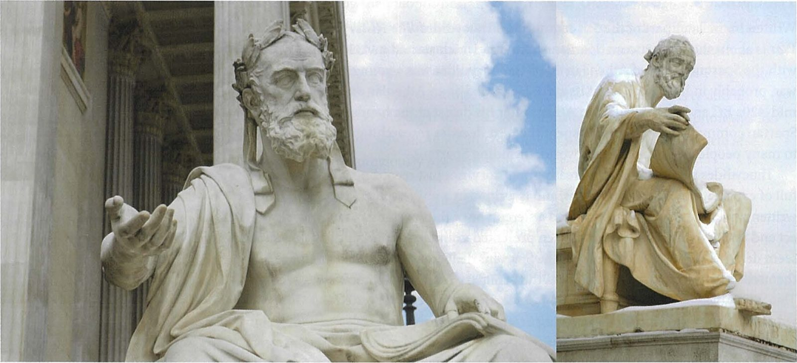
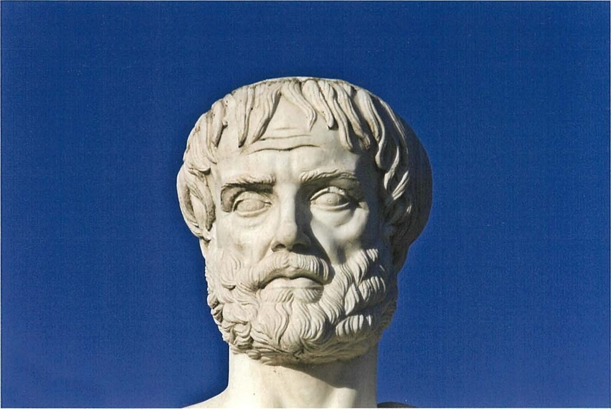

Spartan society to the Battle of Leuctra 371 BC · Lesson 5
Government I: the gerousia and the ekklesia
Who prepared Sparta’s decisions — and how much power did the people really have?
Year 12 Ancient History · Section II, Option G · Present with → or space · Read on a phone with R

Spaced review · 6 minutes · from memory, no notes
Five questions
- 1Name the two priesthoods held by the Spartan kings.Lesson 4
- 2Who was compelled to attend a Spartan king’s funeral?Lesson 4
- 3What did the rider to the Great Rhetra allow?Lesson 3
- 4Which writer was an Athenian commander, exiled in 424 BC?A writer
- 5What is a dyarchy?A term
- Zeus of Lacedaemon and Zeus, Lord of Heaven (Herodotus 6.56, Cooley D5)
- Spartiates and a number of perioikoi were compelled to attend, and helots came too (Herodotus 6.58, Cooley D10)
- If the people adopted a “crooked” proposal, the elders and the kings could dissolve the assembly
- Thucydides — exiled for twenty years after his command at Amphipolis
- Rule by two kings at the same time: Sparta’s dual kingship
Learning intentions and success criteria · 2 minutes
Today’s goals
- explain how power was shared between the gerousia and the ekklesia
- use the correct term for each part of the constitution
- evaluate what Thucydides and Aristotle reveal about how the two bodies worked
- describe who sat in the gerousia and the ekklesia, how they were chosen and what each did
- explain how the rider to the Rhetra limited the assembly
- write a 4-mark outline of the ekklesia that does not confuse it with the ephorate, the gerousia or the krypteia
The council is the gerousia; its members are gerontes (elders). The assembly is the ekklesia. Apella is the Great Rhetra’s word: an ancient commentator says it was Apollo’s festival on the 7th of each month, the day the assembly met (Cooley, note on D48).
Note-making · today’s routine
How to structure your notes
questions and key terms
short phrases, arrows (→ led to), abbreviations (ger. = gerousia, ekk. = ekklesia)
- 1Listen and look firstDon’t copy while the slide is being explained.
- 2Write your own notes at each ✎ checkpointPhrases, not sentences. Arrows for cause and effect.
- 3Compare with the model notesThey appear one row at a time. Add what you missed in a second colour.
- 4Copy each cue question into the left columnLater, cover your notes and answer the cue questions from memory.
- 5Finish with a three-sentence summaryFive checkpoints: the constitution · the gerousia · the ekklesia · the vote of 432 BC · who held the real power.
Key vocabulary
Words you will use today
| The bodies | Meaning |
|---|---|
| eunomia | good order, or good laws: the Spartans’ own name for their system of government |
| gerousia | the council of elders: 28 men over sixty, elected for life, plus the two kings |
| geron · gerontes | a member of the gerousia; the word means old man or elder |
| ekklesia | the assembly of all full Spartan citizens |
| apella | Apollo’s festival on the 7th of each month, the day the assembly met; Plutarch uses it for the assembly |
| ephor | one of five chief officials elected each year; the word means overseer (Lesson 6) |
| How it worked | Meaning |
|---|---|
| acclamation | deciding by shouting: the louder shout wins; votes are not counted |
| probouleusis | preparing business in advance: drawing up the motions put to the assembly |
| motion | a proposal put to a meeting for a decision |
| capital case | a trial in which the penalty could be death |
| oligarchy | rule by a small, privileged group |
| mixed constitution | a government blending rule by one (monarchy), by a few (oligarchy) and by the many (democracy) |
Spelling: Cooley’s translations use Greek forms (Lykourgos, Lakedaimonians, Archidamos). In your own writing use Lycurgus, Lacedaemonians, Archidamus.
1 · Four parts, one constitution · I do — reading the diagram
The constitution at a glance
What do the textbook diagrams leave out?
- 1The gerousia prepared the businessThe people could only “accept or reject the motion laid before them by the members of the gerousia and kings” (Plutarch, D48).
- 2The riderKings and elders could dissolve an assembly that adopted a “crooked proposal” (D48). Cooley: not clear whether this still happened in the classical period.
- 3A court for kingsThe 28 elders and the ephors, with the other king, tried King Pausanias in 403 BC (E44).
- 4“Over 30” is a best guessCooley: “probably” over 30, but members may have joined at about 20.
1 · Four parts, one constitution · We do — two labels for one system If time
A narrow oligarchy — or a mixed constitution?
Only adult male Spartiates with full citizen rights. The perioikoi “were completely excluded from the political process in Sparta”; so were the helots, and Cooley notes that “women were also universally excluded”.
“One could think of the Spartiates as a small wealthy élite with exclusive political rights, which would make Sparta a narrow oligarchy, and it fits this category reasonably well.”
“When ancient commentators analysed the Spartan eunomia, however, they looked only at the Spartiates as full citizens of the Lakedaimonian state and their access to the decision-making process.” They saw “a rare example of a ‘mixed constitution’” — kings, elders and people in balance.
Can both labels be right?
Yes: they measure different things. “Oligarchy” compares the Spartiates with all the free men of Lacedaemon, including the perioikoi, who had no political rights; “mixed constitution” looks only at how power was shared among the citizens themselves.
Quotations from Cooley’s introduction to Spartan institutions (section D). Lesson 6 returns to the mixed constitution with Aristotle.
Notes checkpoint 1 of 5
Four parts, one constitution
Write your own notes first. Then compare, row by row, and add what you missed in a second colour.
2 · The gerousia · I do — the council of elders
The gerousia: who, how chosen, what it did
30 members
- 28 gerontes (elders): men over 60
- + the 2 kings, at any adult age
- any full citizen over 60 could stand, but most gerontes probably came from the most distinguished families
For life, by shouting
- a vacancy only when a geron died
- each candidate was led silently through the assembly; it shouted, and the loudest won
- Cooley: “New members were elected, after campaigning, by acclamation of the assembly”
Prepared and judged
- prepared the motions for the assembly (probouleusis)
- with the ephors, the highest court: capital cases, even the trial of a king
- a power base for kings with friends among the elders
Cooley: life membership gave the gerousia “a good deal of clout in its dealings with the ephors who were in office for merely a year”. It “was therefore at the centre of the political process and had considerable influence on policies.”
2 · The gerousia · We do — read the source together
Electing an elder
[26.1] … thereafter he ordained that when one of them died he should be replaced by the man judged to have the greatest merit of all those over the age of sixty. … [2] This was the method of election. A mass assembly of the people was summoned; the chosen candidates were locked up in a building nearby, where they could neither see nor be seen, and could only hear the shouts of the assembled people. As in other matters, decisions about the candidates were reached by acclaim. One by one, as chosen by lot and not all together, each candidate was introduced and led through the assembly without saying a word. [3] The judges, who were kept apart from the proceedings and equipped with writing tablets, made a note of the level of shouting as each candidate passed through. … Whoever got the most and the loudest cheers they declared elected.
Plutarch, Life of Lykourgos 26.1–3 (part) · written c. AD 100 · trans. B. Wilson · Cooley D15
Who could be chosen?
A man over sixty, judged the most worthy: the election is a contest of virtue.
Why keep the judges and candidates apart?
So that no one could favour a friend: the judges could not see whom the crowd was cheering.
What decided the result?
Loudness, judged by ear. Votes were never counted.
2 · The gerousia · I do — the council’s two jobs
Two jobs: preparing the business and judging
Once the people had been assembled en masse, no one was allowed to table a proposal; they had the power only to accept or reject the motion laid before them by the members of the gerousia and kings.
Plutarch, Life of Lykourgos 6.3 · written c. AD 100 · trans. B. Wilson · Cooley D48
So what? Whoever decides what is voted on has great influence over the result. By Plutarch’s rule the assembly voted only on motions the elders and kings laid before it; in the classical period the ephors also put motions.
By establishing the elderly as judges for trials of capital offences, he gave to the old a prestige that surpassed that of men in their prime.
Xenophon, Constitution of the Lakedaimonians 10.2 · an Athenian admirer of Sparta, probably writing in the late 390s or 380s BC · trans. B. Wilson · Cooley D12
So what? Elders decided trials where the penalty could be death. Plutarch says a geron held “political power over life and death decisions” (Cooley D15).
2 · The gerousia · We do — the court in action If time
The court that tried a king, 403 BC
When Pausanias returned from Athens after fighting a pointless battle, his enemies put him on trial. In the case of the king of the Lakedaimonians, the court that sat consisted of the twenty-eight so-called elders and the ruling ephors, along with the king of the other house. Fourteen of the elders together with Agis (II), the king of the other house, decided that Pausanias was guilty, but the rest of the court voted for acquittal.
Pausanias, Description of Greece 3.5.2 · a Greek traveller writing under Roman rule, 2nd century AD (a different man from the king) · trans. in Cooley E44
Who sat on the court?
All 28 elders, the ephors and the other king.
Count the votes. Who decided the case?
Guilty: 14 elders + King Agis. Acquit: the other 14 elders + the ephors. The elders split evenly, so the ephors’ votes saved the king.
So what? A king could be tried for his life, and he needed friends among the elders: Cooley calls the gerousia “a crucial power base for the kings”.
Notes checkpoint 2 of 5
The gerousia: a council of elders
3 · The ekklesia · I do — the citizens’ assembly
Who sat in the ekklesia — and who did not?
All Spartiates with full political rights: in Cooley’s words, “probably all men over 30 years of age who had not been excluded for some reason (serious crime, cowardice, inability to contribute to the syssitia)”.
“It is not clear whether full citizens of Sparta were eligible from the time they were elected to a mess, aged 20, or from c.30 when they completed their further military training.”
Plutarch calls the Rhetra’s Apella an assembly, but an ancient commentator on Thucydides says the apella was Apollo’s festival on the 7th of each month, the day the assembly met (Cooley, note on D48). Historians call the assembly the ekklesia.
NESA’s 2022 marking guidelines list: “Women participated in the assembly and could participate in acclamation but were excluded from other formal structures within Spartan society.”
Cooley says “women were also universally excluded” from political rights, and gives no evidence that they joined in the assembly.
3 · The ekklesia · I do — its powers
What the ekklesia decided
- 1War and peaceCooley: “Its main responsibility were decisions on foreign policy, particularly about war and peace”.
- 2ElectionsIt elected the gerontes and the ephors.
- 3Generals and kingsIt chose a general if no king could lead a campaign, and settled disputed royal successions.
- 4LawsIt voted on proposed laws — which were not written down.
The Assembly of the Lakedaimonians has decided on the following terms to make an agreement with the people of Argos
Treaty with Argos, quoted by Thucydides, History of the Peloponnesian War 5.77.1 · trans. in Cooley B19
Why does a treaty begin with the assembly?
The assembly’s decision gave the treaty its authority — the Rhetra’s “For the people, decision and power” in action.
3 · The ekklesia · I do — how a meeting worked
How it voted — and what members could not do
Thucydides: “Lakedaimonians take decisions by acclamation rather than casting votes” (1.87.2, Cooley E31; also translated “voting pebbles”, Cooley D23).
Plutarch: “no one was allowed to table a proposal” (D48). Cooley: “we have no evidence that common members of the assembly were allowed to voice their views”.
Kings, gerousia and ephors prepared the motions, and “in the classical period the ephors chaired meetings”: they decided whom to call to speak and “when to call a vote”.
Cooley: “The Spartan assembly had little power compared to the sovereign Athenian ekklesia.” Yet it voted on what was put to it, and it “could play an important role, especially if there was a serious disagreement between kings, gerousia and ephors”.
Check for understanding · hinge question · one finger = A, two fingers = B
Gerousia or ekklesia?
| Statement | A = gerousia · B = ekklesia |
|---|---|
| 1 · Judged capital cases (with the ephors) | A — gerousia |
| 2 · Decided by shouting whether to go to war | B — ekklesia |
| 3 · Members were over 60 and served for life | A — gerousia |
| 4 · Elected the gerontes | B — ekklesia |
Everyone shows one or two fingers for each statement. Be ready to name a source for your answer.
Notes checkpoint 3 of 5
The ekklesia: the citizens’ assembly
4 · The vote of 432 BC · We do — the assembly in action
A king against an ephor
[79.1] … they ordered all non-Lakedaimonians present to withdraw and proceeded to hold their own debate about the current state of affairs. [79.2] There was broad agreement amongst those present that the Athenians had already acted illegally and that war should be declared as soon as possible. But at this point their own king, Archidamos, who had a great reputation for wisdom and moderation, came forward and made a speech.
[85.1] … Let us take our time.
Thucydides, History of the Peloponnesian War 1.79.1–2 and 85.1 · trans. B. Wilson · Cooley E29
[86.5] So now, cast your votes for war, fellow Lakedaimonians, and be worthy of Sparta. Don’t let the Athenians expand their empire. Don’t betray your allies.
Thucydides 1.86.5 · trans. B. Wilson · Cooley E30
The king advised waiting. Who decided?
The assembly. Cooley: the king’s speech “is a view, not a command nor state policy – and, of course, it is rejected by popular vote.”
So much for Herodotus’ claim (Lesson 4) that the kings could “declare war on any country they please”: Cooley finds “no evidence from the historical period” for it (note on D5).
4 · The vote of 432 BC · We do — read the source together
Thucydides on the vote for war
[1] After this speech, in his capacity as presiding ephor, he put the question to the vote in the assembly of the Lakedaimonians. [2] Lakedaimonians take decisions by acclamation rather than casting votes, and he pretended that he could not tell from their shouts which side of the debate had won. In reality, he wanted them to make their vote clearly and unequivocally, and thus to inspire them to action. So he made the following announcement: “Lakedaimonians, those of you who think that the treaties have been broken and that the Athenians are at fault, kindly stand over there” – and he pointed to the appropriate area – “and those of you who disagree, stand over there on the other side.” [3] The two sides separated and there was a large majority for those who thought the treaties had been broken.
Thucydides, History of the Peloponnesian War 1.87.1–3 · an Athenian, writing in the late 5th century BC about events of 432 BC · trans. B. Wilson · Cooley E31 (1.87.2 also D23)
Who ran the meeting?
An ephor, presiding: in the classical period the ephors chaired the assembly.
How did the assembly normally vote?
By shouting — this time, unusually, by walking to one side or the other.
Why did he make them divide?
Thucydides’ reason: a clear vote that would “inspire them to action”.
What did they decide?
That Athens had broken the treaties — in effect, a vote for war.
4 · The vote of 432 BC · I do — weighing the evidence
Why did the ephor make them divide — and can we trust the story?
“he wanted them to make their vote clearly and unequivocally, and thus to inspire them to action.”
“The division may have been intended to bring moral pressure on the undecided to go along with the majority and be seen supporting the brave and patriotic choice, especially as the single most charismatic and authoritative Spartan (Archidamos) was against the motion.”
So: the assembly made the decision, but an official chose how the question was put and how the vote was taken.
Thucydides was an Athenian, and this was a closed meeting of Spartans. Cooley: “it is hard to imagine him having the chance to ask about the debate before his exile from Athens in 424.” The speeches are at best approximations.
A vote taken in such an unusual way is the kind of detail people remember: Cooley says it “would certainly have been remembered by Thucydides’ informants.”
Notes checkpoint 4 of 5
The assembly in action: 432 BC
5 · Who held the real power? · We do — think, pair, share
The people’s power — and its limit
For the people, decision and power.
… So Polydoros and Theopompos, the kings, added the following rider to the rhetra.
But if the people shall adopt a crooked proposal, the elders and founder-leaders shall have the power of dissolution.
Plutarch, Life of Lykourgos 6.1 and 6.4 · trans. B. Wilson · Cooley D48
How much power did the people really have, given the rider?
The final vote on what was put to it — though Cooley thinks officials probably made some important decisions without consulting the people at all.
They were meant only to accept or reject motions the kings and elders prepared; when the people began amending them, the rider let a “crooked” decision be set aside.
Plutarch credits the rider to Kings Polydorus and Theopompus, but Cooley: “it’s now generally agreed that the ‘rider’ is part of the original document.” Whether it was still used in the classical period is not clear.
5 · Who held the real power? · I do — a critic’s view of the elders
Aristotle on the gerousia: report or judgement?
In addition their regulations for the office of elders are not good. … though whether they should be in charge of important trials for life is debatable (for old age can affect mind as well as body). … Men who have held this office have been shown to have betrayed for bribes and to have corruptly given away many public interests. Therefore it would be better if they were not exempt from being held to account as they now are. … Moreover their way of judging the choice of elders is childish; nor is it right that a man hoping to be thought worthy of the office should have to campaign for it.
Aristotle, Politics 2.9, 1270b35–1271a18 (part) · a philosopher based in Athens, writing in the 330s–320s BC · trans. in Cooley D13
What does he report?
Some gerontes took bribes; all served for life and were never held to account.
What does he judge?
The rules are “not good”; the shouting election is “childish”.
Cooley: “It is important to note that it was composed in the 330s/320s by when Sparta was a second-rate power.” He judged the system after Leuctra, knowing it had failed.
5 · Who held the real power? · You do · 6 minutes · press K for the timer
Your turn: annotate Aristotle on the gerousia
- O — when did Aristotle write, and what had happened to Sparta by then?
- V — underline what he reports about the elders
- P — he compared constitutions to find the best. Why might that make him look for faults?
- R — circle what he judges. One fair criticism? One exaggerated?
- L — what does he not tell us about how the ekklesia worked?

What does calling the election “childish” reveal about Aristotle’s own values?
Aristotle calls the shouting election “childish”, and adds a second objection: that a candidate had to campaign, when he believed that “a man should hold office whether he wants it or not, if he is worthy of it”. He distrusted ambition, since “the great majority of deliberate wrongdoing comes about through ambition and love of money”. The criticism therefore reveals a philosopher who wanted office given for proven merit, not won by popularity — which makes it a judgement about values, not simply a report of Spartan practice.
5 · Who held the real power? · We do — weigh the two bodies
The gerousia or the ekklesia?
- Permanent: members for life, with experience and prestige
- Prepared motions for the assembly (with the kings, and later the ephors)
- Judged capital cases — even kings
- With the kings, could set aside a “crooked” decision (if the rider still applied)
- Matters put to the assembly needed its vote
- Elected the gerontes and the ephors
- Decided war and peace — against a king’s advice in 432 BC
- Mattered most when the leaders disagreed
“The Spartan assembly therefore added a democratic element to the constitution, but since the decision making process was mainly in the hands of a very small body of officials, the system nevertheless has a strongly oligarchic character.”
Notes checkpoint 5 of 5
Who held the real power?
Finish your notes
Summary: three sentences
- Who sat in the gerousia, how were they chosen, and what did it do?
- Who sat in the ekklesia, and what could it decide?
- Who held the real power — and why?
The gerousia was a council of twenty-eight elders over sixty, elected for life by the assembly’s shouts, plus the two kings; it prepared motions for the assembly and, with the ephors, judged the most serious cases. The ekklesia, the assembly of full Spartiate citizens, voted by acclamation to elect officials and decide war and peace, but could only accept or reject what it was offered. Because a few officials prepared and ran its business, and probably made some decisions without it, Cooley judges the system “strongly oligarchic” in character.
6 · Answering HSC questions
This lesson was examined in 2025
25 marks, about 45 minutes — about 1.8 minutes a mark. 4 marks ≈ 7 minutes.
NESA: “Sketch in general terms; indicate the main features of”.
Not what the ekklesia was, but what it did — and the right body every time.
We take the question apart, you write for 7 minutes, then we mark it against NESA’s criteria, NESA’s sample answer and a model.
HSC 2025 · Section II · Question 11 (a) · 4 marks
Outline the role of the ekklesia in Sparta during this period.
Take it apart, write it yourself, then check it against NESA.
HSC 2025 Q11(a) · We do — deconstruct the question
What the question is really asking
The main features of its role, sketched briefly: several things it did, each in a few precise words. No long explanation, no judgement needed.
What it did: decided the motions put to it, elected officials, decided war and peace — and how it voted. Membership alone is not a role. Name the right body: not the ephors, the gerousia or the krypteia.
From the Great Rhetra to 371 BC: the Rhetra’s “For the people, decision and power”, and classical evidence such as the vote of 432 BC.
About 7 minutes · three or four roles, how it voted and one limit · one specific example · about 100–150 words · no introduction.
HSC 2025 Q11(a) · You do · 7 minutes · press K for the timer
Outline the role of the ekklesia in Sparta during this period. (4 marks)
- what it did, not just what it was
- how it voted, and one example
- one limit on its power
- the term “ekklesia” used correctly every time
- about 100–150 words
Start: “The ekklesia was the assembly of full Spartiate citizens. Its role was to …”
HSC 2025 Q11(a) · the marking guidelines and the markers’ feedback
What the markers rewarded
| Marks | Criteria |
|---|---|
| 4 | Provides an informed outline relevant to the question · Communicates effectively using appropriate historical terms and concepts |
| 3 | Provides an outline relevant to the question · Communicates using some historical terms and concepts |
| 2 | Provides some information relevant to the question · May use some historical terms and concepts |
| 1 | Makes a general statement(s) relevant to the question |
outline accurately the role of the ekklesia with reference to specific roles of voting by acclamation on major decisions regarding war, peace and foreign policy and electing officials (a)
demonstrating knowledge of key historical terms that are identified in the syllabus and not confusing the ekklesia with the ephorate, gerousia, krypteia or other Spartan terms (a)
Source: NESA, 2025 HSC Ancient History Marking Guidelines (Section II, part (a)) and the 2025 marking feedback for Question 11.
HSC 2025 Q11(a) · I do — NESA’s sample answer, annotated
NESA’s sample answer in 98 words — and claims to check
Sample answer from the NESA 2025 HSC Ancient History Marking Guidelines · 98 words
Marker’s margin
Even sharper: say how it voted — by acclamation (Thucydides 1.87.2) — and give the vote of 432 BC as an example. Write “Spartiates” rather than “free male citizens”: it is more exact, because the perioikoi were free men too but had no vote in the Spartan assembly.
HSC 2025 Q11(a) · Check your answer — a model written for this lesson
Roles, how it voted, then the limits
Model written for this lesson · 149 words, about 7 minutes
Marker’s margin
HSC 2025 Q11(a) · three answers that fall short
Why answers drop marks
The ekklesia was the Spartan assembly. It was made up of Spartan citizens and met in the open air. It was the democratic part of the constitution.
Accurate, but membership and place are not a role. Nothing it did is outlined.
The ekklesia voted on important matters like war and elected officials. It was controlled by the elders, so it did not have much power.
Real roles and a limit — but which officials? how did it vote? No example, so the outline is not yet “informed”.
The ekklesia was a board of five officials elected every year who supervised the kings and controlled the krypteia.
That is the ephorate — exactly the confusion the 2025 feedback named.
Written for this lesson to show the marking criteria — not real student answers.
HSC 2025 Q11(a) · Self-mark
Mark your own answer
Fewer than five ticks? Add the missing piece in a second colour.
Outline the role of the gerousia in Sparta during this period. (4 marks)
Use the gerousia card in section 2: who, how chosen, what it did — and keep it separate from the assembly.
Underline every body you named — ekklesia, gerousia, ephors, kings. Is each one doing what that body really did?
Practice and review · 1 of 4 · sequencing
Put the stages of the 432 BC debate in order
Write the letters in order. Then: which stage shows the ephor’s power most clearly?
- AThe citizens shout their decision.
- BKing Archidamus urges the Spartans not to rush into war.
- CA large majority stands with those who think the treaties have been broken.
- DAll non-Lacedaemonians are ordered to withdraw.
- ESthenelaidas says he cannot tell which shout is louder and asks the citizens to stand on two sides.
- FThe ephor Sthenelaidas speaks for war and puts the question to the vote.
- 1D · Non-Lacedaemonians withdrawThucydides 1.79.1
- 2B · Archidamus urges caution1.79.2–85
- 3F · Sthenelaidas speaks; puts the vote1.86–87.1
- 4A · The citizens shout1.87.2
- 5E · He “pretended” he could not tell; they divide1.87.2
- 6C · A large majority: the treaties were broken1.87.3
The ephor’s power: stage 5 (E) — he chose how the vote was taken, though the citizens still decided. Stage 3 (F) shows it too: he presided and put the question.
Practice and review · 2 of 4 · true, false, justify
True or false? Justify with a source
- 1The gerousia had thirty members, including the two kings. True — “Set up a gerousia of thirty, with the founder-leaders (archagetai)” (the Rhetra, D48); Plutarch: “the total membership of the council would be thirty when the two kings were added to the twenty-eight elders” (D14).
- 2Gerontes were elected for one year at a time. False — for life: a geron was replaced only when he died (Plutarch, Cooley D15). Ephors served a year.
- 3Ordinary citizens could debate and amend proposals in the ekklesia. False — the people had “the power only to accept or reject” (Plutarch, D48); Plutarch says the rider was added when they began passing amendments, and Cooley finds no evidence that ordinary members could speak.
- 4In 432 BC the decision for war was made by the assembly, not by a king. True — Archidamus urged delay, but the assembly voted that the treaties had been broken (Thucydides 1.87, E31).
- 5The ephorate is listed in the Great Rhetra. False — the Rhetra names the kings, a gerousia and an assembly, but no ephors (D48).
- 6In a gerousia election, the judges could see each candidate as he passed. False — the judges “had no idea who the shouting was for” (Plutarch, D15).
- 7The court that tried King Pausanias in 403 BC included the elders and the ephors. True — “the twenty-eight so-called elders and the ruling ephors” (Pausanias 3.5.2, E44).
- 8Aristotle praised the way the elders were chosen. False — “their way of judging the choice of elders is childish” (Politics 2.9, D13).
Practice and review · 3 of 4 · cloze
Fill the gaps
- The council of twenty-eight elders and two kings was called the gerousia.
- A member of the council had to be over the age of sixty.
- Thucydides says Spartans decided by acclamation rather than casting votes.
- In 432 BC the ephor Sthenelaidas put the question of war to the assembly.
- Preparing the motions put to the assembly is called probouleusis.
- The king who urged the Spartans not to rush into war in 432 BC was Archidamus.
- The rider let the elders and kings dissolve an assembly that adopted a crooked proposal.
- Aristotle called the way the elders were chosen childish.
Practice and review · 4 of 4 · write an analytical paragraph · HSC-style, written for this lesson
How useful is Thucydides’ account of the vote of 432 BC for understanding the power of the Spartan assembly?
Thucydides’ account of 432 BC is very useful evidence that the Spartan assembly voted on the question of war, but also of how far officials could steer that vote. Sthenelaidas, “in his capacity as presiding ephor”, put the question to an assembly that normally decided “by acclamation rather than casting votes”, and a large majority judged the treaties broken although King Archidamus had urged delay: a king’s advice was, in Cooley’s words, “a view, not a command nor state policy”. Yet the ephor chose the procedure, perhaps, as Cooley suggests, to put moral pressure on the undecided. Thucydides was an Athenian describing a closed Spartan meeting, so the speeches are only approximations, but so unusual a vote was probably remembered by his informants. The passage therefore shows an assembly with real power over war, exercised within a process that officials controlled.
Exit ticket · before you leave
Two sentences
Who held the real power — the gerousia or the ekklesia? One sentence with “because”.
One thing the ekklesia could do, and one thing it could not.
Next lesson: the ephors — the officials who chaired the assembly in 432 BC — and what Aristotle thought of Sparta’s mixed constitution.
Sources and credits
Where everything comes from
Quoted from the translations in M. G. L. Cooley (ed.), Sparta, LACTOR Sourcebooks in Ancient History 21, 2nd edn (Cambridge University Press, 2023): Plutarch, Lykourgos 5, 6 and 26 (D14, D48, D15, trans. B. Wilson); Xenophon, Constitution of the Lakedaimonians 10.2 (D12, trans. B. Wilson); Thucydides 1.79–87 and 5.77 (E29, E30, E31, D23, B19, trans. B. Wilson); Pausanias 3.5.2 (E44); Aristotle, Politics 2.9, 1270b6–1271a18 (D18, D13); Herodotus 6.56 and 6.58 (D5, D10, trans. B. Wilson). Cooley’s introductions to Spartan institutions, the gerousia, the ephorate and the assembly, and his notes on D1, D5, D48, E29, E31 and E44, his introduction to B16–B22 and his notes on ancient authors.
HSC question, marking criteria, sample answer and marking feedback: NSW Education Standards Authority, 2025 HSC Ancient History examination, marking guidelines and feedback; women in the assembly: 2022 HSC Ancient History Marking Guidelines. © NESA. NESA glossary of key words for “outline”.
- Modern statues of Thucydides (left) and Xenophon (right) at the Austrian Parliament, Vienna — Clarke & Garner, Fig 1.8
- A modern statue of Aristotle at Stageira, his birthplace — Clarke & Garner, Fig 1.9
Books: Clarke & Garner, Spartan society textbook (school copy).
Textbook images are reproduced for teaching, with the source given under each one. The constitution diagram was drawn for this lesson from Bradley Fig 3.10 and Clarke & Garner Fig 2.4, corrected from Cooley; the gerousia card and the 432 BC flow were made for this lesson.